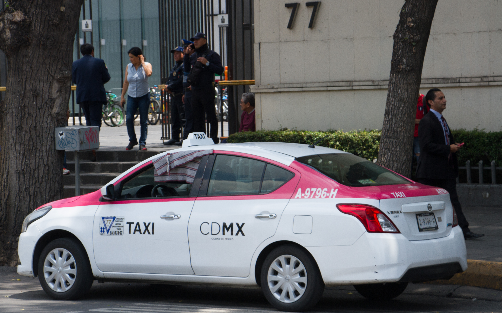
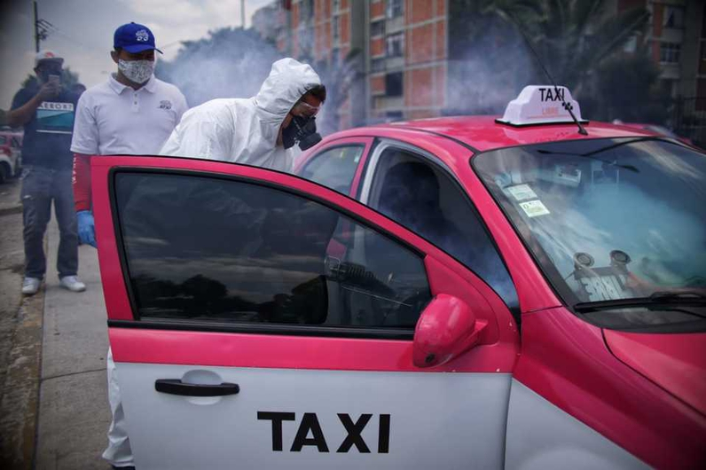

Era uno de los transportes mas utilizados cuando no se cuenta con un vehículo privado y se quiere ir de una manera más segura y cómoda.
 |
Se convirtió en el transporte más concurrido por las emergencias dadas por la COVID 19, debido a su accesibilidad.
 |